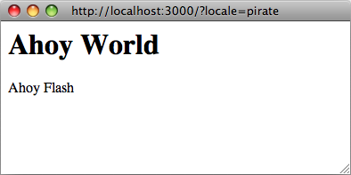

Ruby I18n 框架為您提供了 Rails 應用程式國際化/本地化的所有必要手段。您還可以使用各種可用的 gem 來新增其他功能或特性。有關更多資訊，請參閱 rails-i18n gem。
1 Rails 上的 Ruby 中的 I18n 如何工作
國際化是一個複雜的問題。自然語言在很多方面（例如在複數規則上）不同，以至於很難提供一次解決所有問題的工具。因此，Rails I18n API 側重於：
- 提供開箱即用的英語和類似語言支援
- 可以輕鬆地為其他語言定製和擴充套件所有內容
作為此解決方案的一部分，** Rails 框架中的每個靜態字串** - 例如Active Record 驗證訊息、時間和日期格式 - 已國際化。 Rails 應用程式的 Localization 意味著以所需語言為這些字串定義翻譯的 values。
要在您的應用程式中本地化儲存和更新 content（例如翻譯部落格文章），請參閱 翻譯 model 內容 部分。
1.1 圖書館整體架構
因此，Ruby I18n gem 分為兩部分：
- i18n 框架的公共 API - 一個 Ruby module 帶有定義庫如何工作的公共方法
- 實現這些方法的預設後端（有意命名為 Simple 後端）
作為使用者，您應該始終只訪問 I18n module 上的公共方法，但瞭解後端的功能很有用。
可以將隨附的 Simple 後端替換為更強大的後端，該後端可以將翻譯資料儲存在關係資料庫、GetText 字典或類似資料庫中。請參閱下面的 使用不同的後端 部分。
1.2 公共 I18n API
I18n API 最重要的方法是：
translate # Lookup text translations
localize # Localize Date and Time objects to local formats
它們具有別名 #t 和 #l，因此您可以像這樣使用它們：
I18n.t 'store.title'
I18n.l Time.now
還有以下屬性的屬性讀取器和寫入器：
load_path # Announce your custom translation files
locale # Get and set the current locale
default_locale # Get and set the default locale
available_locales # Permitted locales available for the application
enforce_available_locales # Enforce locale permission (true or false)
exception_handler # Use a different exception_handler
backend # Use a different backend
因此，讓我們在接下來的章節中從頭開始國際化一個簡單的 Rails 應用程式！
2 為國際化設定 Rails 應用程式
有幾個步驟可以啟動並執行對 Rails 應用程式的 I18n 支援。
2.1 設定 I18n Module
遵循約定優於設定的理念，Rails I18n 提供了合理的預設翻譯字串。當需要不同的翻譯字串時，它們可以被覆蓋。
Rails 自動將 config/locales 目錄中的所有 .rb 和 .yml 檔案新增到翻譯載入路徑。
此目錄中的預設 en.yml 語言環境包含一對示例翻譯字串：
en:
hello: "Hello world"
這意味著，在 :en 語言環境中，key hello 將對映到 Hello world 字串。 Rails 中的每個字串都以這種方式國際化，例如參見 activemodel/lib/active_model/locale/en.yml 檔案中的 Active Model 驗證訊息或 activesupport/lib/active_support/locale/en.yml 檔案中的時間和日期格式。您可以使用 YAML 或標準 Ruby 雜湊將翻譯儲存在預設（簡單）後端中。
I18n 庫將使用 English 作為 預設語言環境，即如果未設定不同的語言環境，則 :en 將用於查詢翻譯。
i18n 庫對語言環境 keys（經過 一些討論）採取了實用的方法，僅包括 locale（“語言”）部分，如 :en、:pl 或 :pl 部分，而不包括 keys 部分，而不是 ZHTW_THZ3傳統上用於分隔“語言”和“區域設定”或“方言”。許多國際應用程式僅使用語言環境的“語言”元素，例如 :cs、:th 或 :es（用於捷克語、泰語和西班牙語）。但是，不同語言組內也存在可能很重要的地區差異。例如，在 :"en-US" 語言環境中，您將使用 $ 作為貨幣 symbol，而在 :"en-GB" 中，您將使用 £ 作為貨幣。沒有什麼能阻止您以這種方式分離區域和其他設定：您只需要在 :"en-GB" 字典中提供完整的“英語 - 英國”語言環境。
translations load path (I18n.load_path) 是將自動載入的檔案路徑陣列。設定此路徑允許自定義翻譯目錄結構和檔案命名方案。
當第一次查詢翻譯時，後端會延遲載入這些翻譯。即使在翻譯已經宣佈之後，這個後端也可以與其他東西交換。
您可以更改預設語言環境以及在 config/application.rb 中設定翻譯載入路徑，如下所示：
config.i18n.load_path += Dir[Rails.root.join('my', 'locales', '*.{rb,yml}')]
config.i18n.default_locale = :de
在查詢任何翻譯之前必須指定載入路徑。要從初始化程式而不是 config/application.rb 更改預設語言環境：
# config/initializers/locale.rb
# I18n 庫應該在哪裡搜尋翻譯檔案
I18n.load_path += Dir[Rails.root.join('lib', 'locale', '*.{rb,yml}')]
# 可用於應用程式的允許區域設定
I18n.available_locales = [:en, :pt]
# 將預設語言環境設定為 :en 以外的其他內容
I18n.default_locale = :pt
請注意，直接附加到 I18n.load_path 而不是應用程式設定的 i18n 將不覆蓋來自外部 gem 的翻譯。
2.2 跨請求管理語言環境
本地化應用程式可能需要提供對多種語言環境的支援。為此，應在每個請求的開頭設定語言環境，以便在該請求的生命週期內使用所需的語言環境翻譯所有字串。
除非使用 I18n.locale= 或 I18n.with_locale，否則所有翻譯都使用預設語言環境。
如果 I18n.locale 沒有在每個控制器中一致設定，則它可能會洩漏到由同一執行緒/程序提供的後續請求中。例如，在一個 POST 請求中執行 I18n.locale = :es 將對所有以後對 controllers 的未設定區域設定的請求產生影響，但僅在該特定執行緒/程序中有效。因此，您可以使用沒有此洩漏問題的 I18n.with_locale 而不是 I18n.locale =。
可以在 ApplicationController 中的 around_action 中設定語言環境：
around_action :switch_locale
def switch_locale(&action)
locale = params[:locale] || I18n.default_locale
I18n.with_locale(locale, &action)
end
此示例使用 URL 查詢引數來設定區域設定（例如 http://example.com/books?locale=pt）來說明這一點。使用這種方法，http://localhost:3000?locale=pt 呈現葡萄牙語本地化，而 http://localhost:3000?locale=de 載入德語本地化。
可以使用多種不同方法中的一種來設定語言環境。
2.2.1 從域名設定語言環境
您可以選擇的一種方法是根據應用程式執行的域名設定區域設定。例如，我們希望 www.example.com 載入英語（或預設）語言環境，而 www.example.es 載入西班牙語語言環境。因此頂級域名用於區域設定。這有幾個優點：
- 語言環境是 URL obvious 的一部分。
- 人們直觀地掌握內容將使用哪種語言顯示。
- 在Rails中實現非常簡單。
- 搜尋引擎似乎喜歡不同語言的內容存在於不同的、相互關聯的域中。
您可以在 ApplicationController 中像這樣實現它：
around_action :switch_locale
def switch_locale(&action)
locale = extract_locale_from_tld || I18n.default_locale
I18n.with_locale(locale, &action)
end
# 從頂級域獲取 locale 或者如果這樣的 locale 不可用則返回 +nil+
# 你必須輸入如下內容：
# 127.0.0.1 應用程式.com
# 127.0.0.1 應用程式.it
# 127.0.0.1 應用程式.pl
# 在您的 /etc/hosts 檔案中在本地嘗試此操作
def extract_locale_from_tld
parsed_locale = request.host.split('.').last
I18n.available_locales.map(&:to_s).include?(parsed_locale) ? parsed_locale : nil
end
我們還可以以非常相似的方式從 subdomain 設定語言環境：
# 從請求子域中獲取區域設定程式碼（如 http://it.application.local:3000）
# 你必須輸入如下內容：
# 127.0.0.1 gr.application.local
# 在您的 /etc/hosts 檔案中在本地嘗試此操作
def extract_locale_from_subdomain
parsed_locale = request.subdomains.first
I18n.available_locales.map(&:to_s).include?(parsed_locale) ? parsed_locale : nil
end
如果您的應用程式包含區域設定切換選單，那麼您將在其中包含以下內容：
link_to("Deutsch", "#{APP_CONFIG[:deutsch_website_url]}#{request.env['PATH_INFO']}")
假設您將 APP_CONFIG[:deutsch_website_url] 設定為某些 value，例如 http://www.application.de。
此解決方案具有上述優點，但是，您可能無法或可能不想在不同域上提供不同的本地化（“語言版本”）。最明顯的解決方案是在 URL 引數（或請求路徑）中包含區域設定程式碼。
2.2.2 從 URL 引數設定語言環境
設定（和傳遞）區域設定的最常用方法是將其包含在 URL 引數中，就像我們在第一個示例中的 I18n.with_locale(params[:locale], &action) around_action 中所做的那樣。在這種情況下，我們希望有像 www.example.com/books?locale=ja 或 www.example.com/ja/books 這樣的 URL。
這種方法具有與從域名設定區域設定幾乎相同的一組優點：即它是 RESTful 並且與全球資訊網的其餘部分一致。不過，它確實需要更多的工作來實現。
從 params 獲取語言環境並進行相應設定並不難；將它包含在每個 URL 中，從而通過請求傳遞它。在每個 URL 中包含顯式選項，例如link_to(books_url(locale: I18n.locale))，當然會很乏味，而且可能是不可能的。
Rails 在其 ApplicationController#default_url_options 中包含用於“集中有關 URL 的動態決策”的基礎結構，這在這種情況下非常有用：它使我們能夠為 url_for 和 (https://api.rubyonrails.org/classes/ActionDispatch/Routing/UrlFor.html#method-i-url_for) 設定“預設值”（依賴於它的實現方法）覆蓋 default_url_options）。
我們可以在 ApplicationController 中包含這樣的內容，然後：
# app/controllers/application_controller.rb
def default_url_options
{ locale: I18n.locale }
end
每個依賴於 url_for 的輔助方法（例如，helpers 用於命名路由，如 root_path 或 root_url，資源路由如 books_path 或 books_url 等）現在將 ** 自動在查詢字串中包含語言環境：ZWZHT **，如下所示。
您可能對此感到滿意。但是，當區域設定“掛起”在應用程式中每個 URL 的末尾時，它確實會影響 URL 的可讀性。此外，從架構的角度來看，區域設定通常在應用程式域的其他部分之上的層次結構：URL 應該反映這一點。
您可能希望 URL 看起來像這樣：http://www.example.com/en/books（載入英語語言環境）和 http://www.example.com/nl/books（載入荷蘭語語言環境）。這可以通過上面的“覆蓋 default_url_options”策略來實現：你只需要使用 scope 設定你的路線：
# 設定/路由.rb
scope "/:locale" do
resources :books
end
現在，當您呼叫 books_path 方法時，您應該得到 "/en/books"（對於預設語言環境）。像 http://localhost:3001/nl/books 這樣的 URL 應該載入荷蘭語語言環境，然後，隨後對 books_path 的呼叫應該返回 "/nl/books"（因為語言環境已更改）。
警告。由於每個請求都會快取 default_url_options 的返回 value，因此無法在每次迭代中設定相應 I18n.locale 的迴圈中呼叫 helpers 來產生區域設定選擇器中的 URL。相反，保持 I18n.locale 不變，並將顯式 :locale 選項傳遞給幫助程式，或編輯 request.original_fullpath。
如果您不想在路由中強制使用語言環境，您可以使用可選的路徑範圍（由括號表示），如下所示：
# 設定/路由.rb
scope "(:locale)", locale: /en|nl/ do
resources :books
end
使用這種方法，在沒有語言環境的情況下訪問諸如 http://localhost:3001/books 之類的資源時，您將不會獲得 Routing Error。當您想在未指定時使用預設語言環境時，這很有用。
當然，您需要特別注意應用程式的根 URL（通常是“主頁”或“儀表板”）。像 http://localhost:3001/nl 這樣的 URL 不會自動工作，因為 routes.rb 中的 root to: "dashboard#index" 宣告沒有考慮區域設定。 （沒錯：只有一個“根”URL。）
您可能需要對映這樣的 URL：
# 設定/路由.rb
get '/:locale' => 'dashboard#index'
請特別注意 ** 路線的順序**，因此此路線宣告不會“吃掉”其他路線。 （您可能想直接在 root :to 宣告之前新增它。）
檢視各種簡化路由工作的 gem：routing_filter、rails-translate-routes、route_translator。
2.2.3 從使用者首選項設定語言環境
具有經過身份驗證的使用者的應用程式可以允許使用者通過應用程式的介面設定區域設定首選項。使用這種方法，使用者選擇的區域設定首選項會保留在資料庫中，並用於為該使用者的已驗證請求設定區域設定。
around_action :switch_locale
def switch_locale(&action)
locale = current_user.try(:locale) || I18n.default_locale
I18n.with_locale(locale, &action)
end
2.2.4 選擇隱式語言環境
當尚未為請求設定顯式語言環境時（例如通過上述方法之一），應用程式應嘗試推斷所需的語言環境。
2.2.4.1 從語言頭推斷語言環境
Accept-Language HTTP 標頭指示請求回應的首選語言。瀏覽器 根據使用者的語言首選項設定此標題 value，使其成為推斷區域設定時的首選。
使用 Accept-Language 標頭的一個簡單實現是：
def switch_locale(&action)
logger.debug "* Accept-Language: #{request.env['HTTP_ACCEPT_LANGUAGE']}"
locale = extract_locale_from_accept_language_header
logger.debug "* Locale set to '#{locale}'"
I18n.with_locale(locale, &action)
end
private
def extract_locale_from_accept_language_header
request.env['HTTP_ACCEPT_LANGUAGE'].scan(/^[a-z]{2}/).first
end
在實踐中，需要更健壯的程式碼才能可靠地做到這一點。 Iain Hecker 的 http_accept_language 庫或 Ryan Tomayko 的 locale Rack 中介軟體為這個問題提供瞭解決方案。
2.2.4.2 從 IP 地理位置推斷區域設定
發出請求的客戶端的 IP 地址可用於推斷客戶端的區域，從而推斷其區域設定。諸如 GeoLite2 Country 之類的服務或 geocoder 之類的 gem 可用於實現這種方法。
通常，這種方法遠不如使用語言標頭可靠，並且不推薦用於大多數 Web 應用程式。
2.2.5 從 Session 或 Cookie 儲存區域設定
您可能想將所選語言環境儲存在 session 或 cookie 中。但是，不要這樣做。區域設定應該是透明的並且是 URL 的一部分。這樣您就不會打破人們對網路本身的基本假設：如果您向朋友傳送 URL，他們應該看到與您相同的頁面和內容。一個花哨的詞是你正在 RESTful。在 Stefan Tilkov 的文章 中閱讀有關 RESTful 方法的更多資訊。有時這條規則有例外，下面將討論這些例外。
3 國際化和本地化
行！現在您已經在 Rails 應用程式上初始化了對 Ruby 的 I18n 支援，並告訴它使用哪個區域設定以及如何在請求之間保留它。
接下來，我們需要通過抽象每個特定於語言環境的元素來國際化我們的應用程式。最後，我們需要通過為這些摘要提供必要的翻譯來本地化它。
給出以下示例：
# 設定/路由.rb
Rails.application.routes.draw do
root to: "home#index"
end
# app/controllers/application_controller.rb
class ApplicationController < ActionController::Base
around_action :switch_locale
def switch_locale(&action)
locale = params[:locale] || I18n.default_locale
I18n.with_locale(locale, &action)
end
end
# app/controllers/home_controller.rb
class HomeController < ApplicationController
def index
flash[:notice] = "Hello Flash"
end
end
<!-- app/views/home/index.html.erb -->
<h1>Hello World</h1>
<p><%= flash[:notice] %></p>

3.1 抽象本地化程式碼
在我們的程式碼中，有兩個用英語編寫的字串將在我們的回應中呈現（“Hello Flash”和“Hello World”）。要國際化此程式碼，需要將這些字串替換為對 Rails' #t helper 的呼叫，併為每個字串使用適當的 key：
# app/controllers/home_controller.rb
class HomeController < ApplicationController
def index
flash[:notice] = t(:hello_flash)
end
end
<!-- app/views/home/index.html.erb -->
<h1><%= t :hello_world %></h1>
<p><%= flash[:notice] %></p>
現在，當渲染此 view 時，它會顯示一條錯誤訊息，告訴您 keys :hello_world 和 :hello_flash 的翻譯丟失。

Rails 將 t (translate) helper 方法新增到您的 views 中，這樣您就無需一直拼寫 I18n.t。此外，此 helper 將捕獲丟失的翻譯並將產生的錯誤訊息包裝到 <span class="translation_missing"> 中。
3.2 提供國際化字串的翻譯
將缺失的翻譯新增到翻譯詞典檔案中：
# config/locales/en.yml
en:
hello_world: Hello world!
hello_flash: Hello flash!
# config/locales/pirate.yml
pirate:
hello_world: Ahoy World
hello_flash: Ahoy Flash
因為 default_locale 沒有改變，翻譯使用 :en 語言環境，回應呈現英文字串：

如果通過 URL 設定了盜版語言環境 (http://localhost:3000?locale=pirate)，則回應會呈現盜版字串：

新增新的語言環境檔案時需要重新啟動伺服器。
您可以使用 YAML (.yml) 或普通的 Ruby (.rb) 檔案將您的翻譯儲存在 SimpleStore 中。 YAML 是 Rails 開發人員的首選。但是，它有一個很大的缺點。 YAML 對空格和特殊字元非常敏感，因此應用程式可能無法正確載入您的字典。 Ruby 檔案將在第一次請求時使您的應用程式崩潰，因此您可以輕鬆找到問題所在。 （如果您在使用 YAML 詞典時遇到任何“奇怪的問題”，請嘗試將詞典的相關部分放入 Ruby 檔案中。）
如果您的翻譯儲存在 YAML 檔案中，則必須對某些 keys 進行轉義。他們是：
- 真，開，是
- 假，關閉，沒有
例子：
# config/locales/en.yml
en:
success:
'true': 'True!'
'on': 'On!'
'false': 'False!'
failure:
true: 'True!'
off: 'Off!'
false: 'False!'
I18n.t 'success.true' # => 'True!'
I18n.t 'success.on' # => 'On!'
I18n.t 'success.false' # => 'False!'
I18n.t 'failure.false' # => Translation Missing
I18n.t 'failure.off' # => Translation Missing
I18n.t 'failure.true' # => Translation Missing
3.3 將變數傳遞給翻譯
成功國際化應用程式的一個 key 考慮因素是 在抽象本地化時避免對語法規則做出錯誤的假設 程式碼。在一個語言環境中看似基本的語法規則在某些地方可能並不適用 另一個。
下面的例子顯示了不正確的 absstraction，其中假設是
關於翻譯的不同部分的排序。注意 Rails
提供了一個 number_to_currency helper 來處理以下情況。
<!-- app/views/products/show.html.erb -->
<%= "#{t('currency')}#{@product.price}" %>
# config/locales/en.yml
en:
currency: "$"
# config/locales/es.yml
es:
currency: "€"
如果產品的價格是 10，那麼西班牙語的正確翻譯是“10 €” 而不是“€10”，但 abstraction 不能給它。
為了建立合適的 absstraction，I18n gem 附帶了一個稱為變數的功能 允許您在翻譯定義中使用變數的插值和 將這些變數的 values 傳遞給翻譯方法。
正確的 absstraction 如下例所示：
<!-- app/views/products/show.html.erb -->
<%= t('product_price', price: @product.price) %>
# config/locales/en.yml
en:
product_price: "$%{price}"
# config/locales/es.yml
es:
product_price: "%{price} €"
所有語法和標點符號的決定都是在定義本身中做出的，所以 abstraction 可以給出正確的翻譯。
default 和 scope key 字是保留字，不能用作
變數名。如果使用，則會引發 I18n::ReservedInterpolationKey 異常。
如果翻譯需要一個插值變數，但尚未通過
到 #translate，會引發 I18n::MissingInterpolationArgument 異常。
3.4 新增日期/時間格式
行！現在讓我們向 view 新增時間戳，以便我們也可以演示 日期/時間本地化 功能。要本地化時間格式，您將時間物件傳遞給 I18n.l 或（最好）使用 Rails' #l helper。您可以通過傳遞 :format 選項來選擇一種格式 - 預設情況下使用 :default 格式。
<!-- app/views/home/index.html.erb -->
<h1><%= t :hello_world %></h1>
<p><%= flash[:notice] %></p>
<p><%= l Time.now, format: :short %></p>
在我們的盜版翻譯檔案中，讓我們新增一個時間格式（它已經存在於 Rails 英語預設值中）：
# config/locales/pirate.yml
pirate:
time:
formats:
short: "arrrround %H'ish"
所以這會給你：

提示：現在您可能需要新增更多日期/時間格式，以使 I18n 後端按預期工作（至少對於“海盜”語言環境而言）。當然，很有可能有人已經通過為您的語言環境翻譯 Rails' 預設值 來完成所有工作。請參閱 GitHub 上的 rails-i18n 儲存庫 以獲取各種語言環境檔案的存檔。當您將此類檔案放入 config/locales/ 目錄時，它們將自動可供使用。
3.5 其他語言環境的屈折規則
Rails 允許您為英語以外的語言環境定義屈折規則（例如單數和複數規則）。在 config/initializers/inflections.rb 中，您可以為多個語言環境定義這些規則。初始化程式包含一個預設示例，用於為英語指定附加規則；按照您認為合適的其他語言環境遵循該格式。
3.6 本地化 Views
假設您的應用程式中有一個 BooksController。您的 index action 在 app/views/books/index.html.erb 模板中呈現內容。當你把這個模板的localized variant: index.es.html.erb 放在同一個目錄中時，Rails 將在這個模板中渲染內容，當語言環境設定為 :es 時。當語言環境設定為預設語言環境時，將使用通用 index.html.erb view。 （未來的 Rails 版本很可能會將這種 automagic 本地化帶到 public 等中的資產中。）
您可以使用此功能，例如當處理大量靜態內容時，將其放入 YAML 或 Ruby 字典中會很笨拙。但是請記住，您稍後要對模板進行的任何更改都必須傳播到所有這些。
3.7 語言環境檔案的組織
當您使用 i18n 庫附帶的預設 SimpleStore 時， 字典儲存在磁碟上的純文字檔案中。放置翻譯 對於每個區域設定的一個檔案中的應用程式的所有部分可能很難 管理。您可以將這些檔案儲存在對您有意義的層次結構中。
例如，您的 config/locales 目錄可能如下所示：
|-defaults
|---es.yml
|---en.yml
|-models
|---book
|-----es.yml
|-----en.yml
|-views
|---defaults
|-----es.yml
|-----en.yml
|---books
|-----es.yml
|-----en.yml
|---users
|-----es.yml
|-----en.yml
|---navigation
|-----es.yml
|-----en.yml
這樣，您可以將 model 和 model 屬性名稱與 views 中的文字分開，並將所有這些與“預設值”（例如日期和時間格式）分開。 i18n 庫的其他商店可以提供不同的這種分離方法。
Rails 中的預設語言環境載入機制不會載入巢狀字典中的語言環境檔案，就像我們在這裡一樣。因此，要使其正常工作，我們必須明確告訴 Rails 進一步檢視：
# 設定/應用程式.rb
config.i18n.load_path += Dir[Rails.root.join('config', 'locales', '**', '*.{rb,yml}')]
4 I18n API 特性的 Overview
您現在應該對使用 i18n 庫有很好的瞭解並知道如何 國際化一個基本的 Rails 應用程式。在接下來的章節中，我們將 更深入地介紹其功能。
這些章節將展示使用 I18n.translate 方法以及 translate view helper 方法 的示例（注意 view helper 方法提供的附加功能）。
包含的功能如下：
- 查詢翻譯
- 將資料插入翻譯
- 多元化翻譯
- 使用安全的 HTML 翻譯（僅限 view helper 方法）
- 本地化日期、數字、貨幣等。
4.1 查詢翻譯
4.1.1 基本查詢、範圍和巢狀 Key
翻譯由 keys 查詢，它可以是 Symbol 或字串，因此這些呼叫是等效的：
I18n.t :message
I18n.t 'message'
translate 方法還採用 :scope 選項，該選項可以包含一個或多個額外的 keys，用於指定翻譯鍵的“名稱空間”或範圍：
I18n.t :record_invalid, scope: [:activerecord, :errors, :messages]
這將在 Active Record 錯誤訊息中查詢 :record_invalid 訊息。
此外，鍵和範圍都可以指定為點分隔的 keys，如下所示：
I18n.translate "activerecord.errors.messages.record_invalid"
因此，以下呼叫是等效的：
I18n.t 'activerecord.errors.messages.record_invalid'
I18n.t 'errors.messages.record_invalid', scope: :activerecord
I18n.t :record_invalid, scope: 'activerecord.errors.messages'
I18n.t :record_invalid, scope: [:activerecord, :errors, :messages]
4.1.2 預設值
當給出 :default 選項時，如果缺少翻譯，將返回其 value：
I18n.t :missing, default: 'Not here'
# => '不在這裡'
如果 :default 值是 Symbol，它將被用作 key 並進行翻譯。一個可以預設提供多個 values。將返回第一個產生值的值。
例如，以下首先嚐試翻譯 key :missing，然後是 key :also_missing. 由於兩者都沒有產生結果，將返回字串“Not here”：
I18n.t :missing, default: [:also_missing, 'Not here']
# => '不在這裡'
4.1.3 批量和名稱空間查詢
要一次查詢多個翻譯，可以傳遞一個 keys 陣列：
I18n.t [:odd, :even], scope: 'errors.messages'
# => [“必須是奇數”，“必須是偶數”]
此外，key 可以轉換為分組轉換的（可能巢狀的）雜湊。例如，可以接收 all Active Record 錯誤訊息作為雜湊：
I18n.t 'activerecord.errors.messages'
# => {:inclusion=>"未包含在列表中", :exclusion=> ... }
如果要對翻譯的批量雜湊執行插值，則需要將 deep_interpolation: true 作為引數傳遞。當您有以下字典時：
en:
welcome:
title: "Welcome!"
content: "Welcome to the %{app_name}"
那麼巢狀插值將在沒有設定的情況下被忽略：
I18n.t 'welcome', app_name: 'book store'
# => {:title=>"歡迎！", :content=>"歡迎來到 %{app_name}"}
I18n.t 'welcome', deep_interpolation: true, app_name: 'book store'
# => {:title=>"歡迎光臨！", :content=>"歡迎光臨書店"}
4.1.4 “懶惰”查詢
Rails 實現了一種在 views 中查詢語言環境的便捷方法。當您有以下字典時：
es:
books:
index:
title: "Título"
你可以像這樣查詢 books.index.title value inside app/views/books/index.html.erb 模板（注意點）：
<%= t '.title' %>
部分自動翻譯範圍僅可從 translate view helper 方法中使用。
controllers 中也可以使用“惰性”查詢：
en:
books:
create:
success: Book created!
這對於設定 flash 訊息很有用，例如：
class BooksController < ApplicationController
def create
# ...
redirect_to books_url, notice: t('.success')
end
end
4.2 複數
在許多語言中——包括英語——只有兩種形式，單數和複數，因為 給定的字串，例如“1 條訊息”和“2 條訊息”。其他語言（阿拉伯語、日語、Russian 等等）有不同的語法，這些語法有額外的或更少的複數形式。因此，I18n API 提供了靈活的複數功能。
:count 插值變數有一個特殊的作用，它既被插值到翻譯中，又用於根據翻譯中定義的複數規則從翻譯中選擇複數。
多元化後端。預設情況下，僅應用英語複數規則。
I18n.backend.store_translations :en, inbox: {
zero: 'no messages', # optional
one: 'one message',
other: '%{count} messages'
}
I18n.translate :inbox, count: 2
# => '2 條訊息'
I18n.translate :inbox, count: 1
# => '一條訊息'
I18n.translate :inbox, count: 0
# => '沒有訊息'
:en 中的複數演算法很簡單：
lookup_key = :zero if count == 0 && entry.has_key?(:zero)
lookup_key ||= count == 1 ? :one : :other
entry[lookup_key]
表示為 :one 的翻譯被視為單數，而 :other 被視為複數。如果計數為零，並且存在 :zero 條目，則將使用它而不是 :other。
如果對 key 的查詢沒有返回適合複數的 Hash，則會引發 I18n::InvalidPluralizationData 異常。
4.2.1 特定於語言環境的規則
I18n gem 提供了一個 Pluralization 後端，可用於啟用特定於語言環境的規則。包括它
到 Simple 後端，然後將本地化的複數演算法新增到翻譯儲存中，如 i18n.plural.rule。
I18n::Backend::Simple.include(I18n::Backend::Pluralization)
I18n.backend.store_translations :pt, i18n: { plural: { rule: lambda { |n| [0, 1].include?(n) ? :one : :other } } }
I18n.backend.store_translations :pt, apples: { one: 'one or none', other: 'more than one' }
I18n.t :apples, count: 0, locale: :pt
# => '一個或一個'
或者，單獨的 gem rails-i18n 可用於提供更完整的特定於語言環境的複數規則集。
4.3 設定和傳遞語言環境
區域設定可以偽全域性設定為 I18n.locale（使用 Thread.current，例如 Time.zone），也可以作為選項傳遞給 #translate 和 #localize。
如果沒有傳遞語言環境，則使用 I18n.locale：
I18n.locale = :de
I18n.t :foo
I18n.l Time.now
顯式傳遞語言環境：
I18n.t :foo, locale: :de
I18n.l Time.now, locale: :de
I18n.locale 預設為 I18n.default_locale，預設為 :en。預設語言環境可以這樣設定：
I18n.default_locale = :de
4.4 使用安全的 HTML 翻譯
Key 帶有“_html”字尾和名為“html”的鍵被標記為 HTML 安全。當您在 views 中使用它們時，HTML 不會被轉義。
# config/locales/en.yml
en:
welcome: <b>welcome!</b>
hello_html: <b>hello!</b>
title:
html: <b>title!</b>
<!-- app/views/home/index.html.erb -->
<div><%= t('welcome') %></div>
<div><%= raw t('welcome') %></div>
<div><%= t('hello_html') %></div>
<div><%= t('title.html') %></div>
不過，插值會根據需要進行轉義。例如，給定：
en:
welcome_html: "<b>Welcome %{username}!</b>"
您可以安全地傳遞使用者設定的使用者名稱：
<%# This is safe, it is going to be escaped if needed. %>
<%= t('welcome_html', username: @current_user.username) %>
另一方面，安全字串是逐字插入的。
自動轉換為 HTML 安全翻譯文字只能從 translate view helper 方法中使用。

4.5 Active Record Model 的翻譯
您可以使用 Model.model_name.human 和 Model.human_attribute_name(attribute) 方法透明地查詢 model 和屬性名稱的翻譯。
例如，當您新增以下翻譯時：
en:
activerecord:
models:
user: Customer
attributes:
user:
login: "Handle"
# will translate User attribute "login" as "Handle"
然後 User.model_name.human 將返回“客戶”，而 User.human_attribute_name("login") 將返回“控制代碼”。
您還可以為 model 名稱設定複數形式，新增如下：
en:
activerecord:
models:
user:
one: Customer
other: Customers
然後 User.model_name.human(count: 2) 將返回“客戶”。使用 count: 1 或不使用引數將返回“客戶”。
如果您需要訪問給定 model 中的巢狀屬性，則應將這些屬性巢狀在翻譯檔案的 model 級別的 model/attribute 下：
en:
activerecord:
attributes:
user/role:
admin: "Admin"
contributor: "Contributor"
然後 User.human_attribute_name("role.admin") 將返回“管理員”。
如果您使用的類包含 ActiveModel 且不繼承自 ActiveRecord::Base，請將上述 key 路徑中的 activerecord 替換為 activemodel。
4.5.1 錯誤訊息範圍
Active Record 驗證錯誤訊息也可以輕鬆翻譯。 Active Record 為您提供了幾個名稱空間，您可以在其中放置訊息翻譯，以便為某些 models、屬性和/或驗證提供不同的訊息和翻譯。它還透明地考慮了單表繼承。
這為您提供了非常強大的方法，可以根據應用程式的需要靈活地調整訊息。
考慮一個 User model 對 name 屬性進行驗證，如下所示：
class User < ApplicationRecord
validates :name, presence: true
end
在這種情況下，錯誤訊息的 key 是 :blank。 Active Record 將在名稱空間中查詢這個 key：
activerecord.errors.models.[model_name].attributes.[attribute_name]
activerecord.errors.models.[model_name]
activerecord.errors.messages
errors.attributes.[attribute_name]
errors.messages
因此，在我們的示例中，它將按此順序嘗試以下 keys 並返回第一個結果：
activerecord.errors.models.user.attributes.name.blank
activerecord.errors.models.user.blank
activerecord.errors.messages.blank
errors.attributes.name.blank
errors.messages.blank
當您的 models 額外使用繼承時，將在繼承鏈中查詢訊息。
例如，您可能有一個從 User 繼承的 Admin model：
class Admin < User
validates :name, presence: true
end
然後 Active Record 將按以下順序查詢訊息：
activerecord.errors.models.admin.attributes.name.blank
activerecord.errors.models.admin.blank
activerecord.errors.models.user.attributes.name.blank
activerecord.errors.models.user.blank
activerecord.errors.messages.blank
errors.attributes.name.blank
errors.messages.blank
通過這種方式，您可以為模型繼承鏈和屬性、models 或預設範圍中不同點的各種錯誤訊息提供特殊翻譯。
4.5.2 錯誤資訊插值
已翻譯的 model 名稱、已翻譯的屬性名稱和 value 始終可用於插值，分別為 model、attribute 和 value。
因此，例如，您可以使用像這樣的屬性名稱："Please fill in your %{attribute}"，而不是預設的錯誤訊息 "cannot be blank"。
-
count，如果可用，可用於複數形式（如果存在）：
| 驗證 | 帶選項 | 留言 | 插值 |
|---|---|---|---|
| 確認 | - | :確認 | 屬性 |
| 驗收 | - | :接受 | - |
| 存在 | - | :空白 | - |
| 缺席 | - | :現在 | - |
| 長度 | :in, :in | :too_short | 計數 |
| 長度 | :in, :in | :too_long | 計數 |
| 長度 | ：是 | :錯誤長度 | 計數 |
| 長度 | ：最低 | :too_short | 計數 |
| 長度 | :最大 | :too_long | 計數 |
| 獨特性 | - | ：採取 | - |
| 格式 | - | ：無效 | - |
| 包容 | - | :包含 | - |
| 排除 | - | :排除 | - |
| 關聯 | - | ：無效 | - |
| 非可選 association | - | ：需要 | - |
| 數量 | - | :not_a_number | - |
| 數量 | :大於 | :大於 | 計數 |
| 數量 | :greater_than_or_equal_to | :greater_than_or_equal_to | 計數 |
| 數量 | :equal_to | :equal_to | 計數 |
| 數量 | :小於 | :小於 | 計數 |
| 數量 | :less_than_or_equal_to | :less_than_or_equal_to | 計數 |
| 數量 | :other_than | :other_than | 計數 |
| 數量 | :only_整數 | :not_an_integer | - |
| 數量 | :in | :in | 計數 |
| 數量 | ：奇怪 | ：奇怪 | - |
| 數量 | :偶 | :偶 | - |
4.6 Action Mailer 電子郵件主題的翻譯
如果您沒有將主題傳遞給 mail 方法，則 Action Mailer 將嘗試查詢
它在你的翻譯中。執行的查詢將使用模式
<mailer_scope>.<action_name>.subject 來構造 key。
# user_mailer.rb
class UserMailer < ActionMailer::Base
def welcome(user)
#...
end
end
en:
user_mailer:
welcome:
subject: "Welcome to Rails Guides!"
要將引數傳送到插值，請使用郵件程式上的 default_i18n_subject 方法。
# user_mailer.rb
class UserMailer < ActionMailer::Base
def welcome(user)
mail(to: user.email, subject: default_i18n_subject(user: user.name))
end
end
en:
user_mailer:
welcome:
subject: "%{user}, welcome to Rails Guides!"
4.7 其他提供 I18n 支援的內建方法的 view
Rails 使用固定字串和其他本地化，例如幾個 helpers 中的格式字串和其他格式資訊。這裡有一個簡短的關於 view 的內容。
4.7.1 Action View Helper 方法
distance_of_time_in_words對其結果進行翻譯和複數化，並插入秒數、分鐘數、小時數等。請參閱 datetime.distance_in_words 翻譯。datetime_select和select_month使用翻譯的月份名稱來填充產生的選擇標籤。有關翻譯，請參閱 date.month_names。datetime_select還會從 date.order 中查詢訂單選項（除非您明確傳遞該選項）。所有日期選擇 helpers 使用 datetime.prompts 範圍內的翻譯來翻譯提示（如果適用）。number_to_currency、number_with_precision、number_to_percentage、number_with_delimiter和number_to_human_sizehelpers 使用位於 number 範圍內的數字格式設定。
4.7.2 Active Model 方法
model_name.human和human_attribute_name使用模型名稱和屬性名稱的翻譯，如果在 activerecord.models 範圍內可用。它們還支援對繼承類名稱的轉換（例如用於 STI），如上面“錯誤訊息範圍”中所述。ActiveModel::Errors#generate_message（由 Active Model 驗證使用，但也可以手動使用）使用model_name.human和human_attribute_name（見上文）。它還翻譯錯誤訊息並支援繼承類名稱的翻譯，如上面“錯誤訊息範圍”中所述。ActiveModel::Errors#full_messages使用將從 errors.format（預設為"%{attribute} %{message}"）查詢的分隔符將屬性名稱新增到錯誤訊息中。
4.7.3 Active Support 方法
-
Array#to_sentence使用 support.array 範圍中給出的格式設定。
5 如何儲存您的自定義翻譯
Active Support 附帶的簡單後端允許您以普通 Ruby 和 YAML 格式儲存翻譯。2
例如，提供翻譯的 Ruby 雜湊可以如下所示：
{
pt: {
foo: {
bar: "baz"
}
}
}
等效的 YAML 檔案如下所示：
pt:
foo:
bar: baz
如您所見，在這兩種情況下，頂級 key 都是語言環境。 :foo 是名稱空間 key 和 :bar 是翻譯“baz”的 key。
這是 Active Support en.yml 翻譯 YAML 檔案中的“真實”示例：
en:
date:
formats:
default: "%Y-%m-%d"
short: "%b %d"
long: "%B %d, %Y"
因此，以下所有等效查詢都將返回 :short 日期格式 "%b %d"：
I18n.t 'date.formats.short'
I18n.t 'formats.short', scope: :date
I18n.t :short, scope: 'date.formats'
I18n.t :short, scope: [:date, :formats]
通常我們建議使用 YAML 作為儲存翻譯的格式。但是，在某些情況下，您希望將 Ruby lambdas 儲存為區域設定資料的一部分，例如用於特殊日期格式。
6 自定義您的 I18n 設定
6.1 使用不同的後端
由於幾個原因，隨 Active Support 一起提供的簡單後端只做“可能工作的最簡單的事情”for Ruby on Rails3 ...這意味著它只能保證適用於英語，作為副作用，語言與英語非常相似。此外，簡單後端只能讀取翻譯，但不能將它們動態儲存為任何格式。
不過，這並不意味著您會受到這些限制的困擾。 Ruby I18n gem 通過將後端實例傳遞給 I18n.backend= 設定器，可以非常輕鬆地將簡單後端實現與更適合您需求的其他東西交換。
例如，您可以將 Simple 後端替換為 Chain 後端以將多個後端連結在一起。當您想使用帶有簡單後端的標準翻譯但將自定義應用程式翻譯儲存在資料庫或其他後端時，這很有用。
使用 Chain 後端，您可以使用 Active Record 後端並回退到（預設）簡單後端：
I18n.backend = I18n::Backend::Chain.new(I18n::Backend::ActiveRecord.new, I18n.backend)
6.2 使用不同的異常處理程式
I18n API 定義了以下異常，當發生相應的意外情況時，後端會引發這些異常：
MissingTranslationData # no translation was found for the requested key
InvalidLocale # the locale set to I18n.locale is invalid (e.g. nil)
InvalidPluralizationData # a count option was passed but the translation data is not suitable for pluralization
MissingInterpolationArgument # the translation expects an interpolation argument that has not been passed
ReservedInterpolationKey # the translation contains a reserved interpolation variable name (i.e. one of: scope, default)
UnknownFileType # the backend does not know how to handle a file type that was added to I18n.load_path
當這些異常在後端丟擲時，I18n API 將捕獲所有這些異常，並將它們傳遞給 default_exception_handler 方法。此方法將重新引發除 MissingTranslationData 異常之外的所有異常。當一個 MissingTranslationData 異常被捕獲時，它將返回包含缺少的 key/範圍的異常的錯誤訊息字串。
這樣做的原因是在開發過程中，您通常希望 views 仍然呈現，即使缺少翻譯。
不過，在其他情況下，您可能希望更改此行為。例如。預設異常處理不允許在自動化測試期間輕鬆捕獲丟失的翻譯。為此，可以指定不同的異常處理程式。指定的異常處理程式必須是 I18n module 上的方法或具有 call 方法的類：
module I18n
class JustRaiseExceptionHandler < ExceptionHandler
def call(exception, locale, key, options)
if exception.is_a?(MissingTranslation)
raise exception.to_exception
else
super
end
end
end
end
I18n.exception_handler = I18n::JustRaiseExceptionHandler.new
這隻會重新引發 MissingTranslationData 異常，將所有其他輸入傳遞給預設異常處理程式。
但是，如果您使用 I18n::Backend::Pluralization，此處理程式也會引發 I18n::MissingTranslationData: translation missing: en.i18n.plural.rule 異常，通常應忽略該異常以回退到英語語言環境的預設複數規則。為了避免這種情況，您可以對翻譯 key 使用額外的檢查：
if exception.is_a?(MissingTranslation) && key.to_s != 'i18n.plural.rule'
raise exception.to_exception
else
super
end
預設行為不太理想的另一個示例是 Rails TranslationHelper，它提供了方法 #t（以及 #translate）。當在此上下文中發生 MissingTranslationData 異常時，幫助程式將訊息包裝到具有 CSS 類 translation_missing 的 span 中。
為此，無論通過設定 :raise 選項定義了什麼異常處理程式，helper 都會強制 I18n#translate 引發異常：
I18n.t :foo, raise: true # always re-raises exceptions from the backend
7 翻譯 Model 內容
本指南中描述的 I18n API 主要用於翻譯介面字串。如果您想翻譯 model 內容（例如部落格文章），您將需要不同的解決方案來幫助解決這個問題。
幾個 gem 可以幫助解決這個問題：
8 結論
在這一點上，您應該對 Rails 上的 Ruby 中的 I18n 支援如何工作有一個很好的 overview，並準備開始翻譯您的專案。
9 為 Rails I18n 做貢獻
Rails 上的 Ruby 中的 I18n 支援是在 2.2 版中引入的，並且仍在不斷髮展。該專案遵循 Rails 上的良好 Ruby 開發傳統，首先在 gem 和實際應用程式中發展解決方案，然後才挑選出最廣泛有用的功能中的最佳品種以包含在核心中。
因此，我們鼓勵每個人在 gem 或其他庫中嘗試新的想法和功能，並將它們提供給社群。 （不要忘記在我們的 郵件列表 上宣佈您的工作！）
如果您發現 Rails 上 Ruby 的 示例翻譯資料 儲存庫中缺少您自己的語言環境（語言），請 fork 儲存庫，新增您的資料，然後傳送 [拉取請求]ZHTW_url_2_WTH
10 資源
- Google group: rails-i18n - 專案的郵件列表。
- GitHub: rails-i18n - 程式碼儲存庫併為 rails-i18n 專案釋出 tracker。最重要的是，您可以為 Rails 找到許多 示例翻譯，它們在大多數情況下都適用於您的應用程式。
- GitHub: i18n - 程式碼儲存庫併為 i18n gem 釋出 tracker。
11 作者
- Sven Fuchs（原作者）
- Karel Minařík
12 腳註
1 或者，引用 Wikipedia: "國際化是設計軟體應用程式的過程，以便它可以適應各種語言和地區，而無需進行工程更改。本地化是使軟體適應特定環境的過程通過新增特定於區域設定的元件和翻譯文字來區域或語言。”
[2]:其他後端可能允許或要求使用其他格式，例如GetText 後端可能允許讀取 GetText 檔案。
[3]:其中一個原因是我們不希望為不需要任何 I18n 功能的應用程式暗示任何不必要的負載，因此我們需要保持 I18n 庫儘可能簡單，適用於英語。另一個原因是幾乎不可能為所有現有語言的 I18n 相關的所有問題實現一個通用的解決方案。因此，無論如何，允許我們輕鬆交換整個實現的解決方案是合適的。這也使試驗自定義功能和擴充套件變得更加容易。
回饋
我們鼓勵您幫助提高本指南的品質。
如果您發現任何拼寫錯誤或資訊錯誤，請提供回饋。 要開始回饋，您可以閱讀我們的 回饋 部分。
您還可能會發現不完整的內容或不是最新的內容。 請務必為 main 新增任何遺漏的文件。假設是 非穩定版指南(edge guides) 請先驗證問題是否已經在主分支上解決。 請前往 Ruby on Rails 指南寫作準則 查看寫作風格和慣例。
如果由於某種原因您發現要修復的內容但無法自行修補，請您 提出 issue。
關於 Ruby on Rails 的任何類型的討論歡迎提供任何文件至 rubyonrails-docs 討論區。